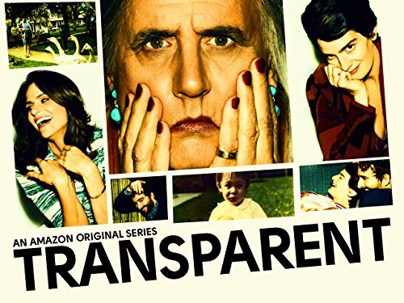

Binge.
Over-indulging in the best (and worst) of streaming
Every week here at Stream, we'll send a writer, armed with a particular theme to scour through streaming platforms to see what's worth watching...and what's not. This week, we're looking at the best (and worst) of British.
Casting a bored eye over Netflix's romantic comedy section...
Playing For KeepsAvailable on: Netflix
Genre: Romantic Comedy
Rating:
...my heart sank when I saw Playing for Keeps is back for streaming.
On paper, this should be good. You want it to be good. It’s directed by Gabriele Muccino, of Pursuit of Happyness fame. It’s got an all-star cast: the aforementioned Gerard Butler, Jessica Biel, Catherine Zeta-Jones, they even dragged Uma Therman into this. The basic premise, whilst saccharine, isn’t horrendous: washed-up football player George Dryer (a discount George Best) moves to America to become closer to his estranged son, and ends up coaching his junior football team. So far, so TV movie.
Still with me? Because this is where it gets weird.
It’s not for me to say whether the life of a children’s team football coach is as arousing as the film portrays it to be, I just always assumed it was rockstars who got women throwing themselves at them. Turns out it’s actually children’s football that gets all the mum’s gushing.
"I felt like I was watching the death of feminism."
Yes, Gerard Butler’s football coaching sees he squirts himself inside out in the football mums; at one point foisting his cherub on someone’s nanny just so he can screw Catherine Zeta-Jones in a TV studio.
The lowest point of the movie is Uma Therman; a woman who cut her acting chops in iconic roles such as ‘Mia Wallace’ and ‘The Bride’, only to be reduced in Playing for Keeps to a demented harpy, tottering around in her bra and begging Gerard Butler to fuck her. I felt like I was watching the death of feminism.
And that’s it. There’s a subplot about George wanting to be a sports-caster the movie hands to him on a plate, glossing over its convenience with sparkling dialogue such as:
‘Can I have a warm up shot?’
‘There are no warm up shots in life, George’.
I beg you all to watch it, because we need to mourn the career of Gerard Butler; an actor who once showed so much promise, who has now sunk to lows of M Night Shyamalan proportions.
LuciferAvailable on: Amazon Prime Instant Video
Genre: Drama
Rating:
I always thought Miranda was a show so bad it was the work of the devil, so it was reassuring to see someone else thought so too in casting Tom Ellis as Satan in Amazon Prime’s Lucifer. Lucifer (surname ‘Morningstar’, I kid you not) gets bored of being Lord of Hell and therefore abdicates from his throne to live in Los Angeles (subtext, much?), help the LAPD and run a nightclub.
Ellis himself is somewhat seductive as the lead, but this one’s a slow burner; in the first few episodes he’s not so much the devil almighty, instead he’s a mild irritant you want to swat.
Lucifer, whilst mildly watchable, doesn’t want to want to be particularly clever; it doesn’t seem to want its audience to delve into some of the deeper theological questions that would awry from Lucifer taking a sabbatical (barmaid Lesley-Ann Brandt asks ‘Don’t you want to spend your time doing something a little more significant?’, something I frequently ask myself). It seems like a massive missed opportunity; it decides to swing for cheap, easy laughs, with cheesy dialogue such as ‘This is serious, Lucifer!’ instead of aiming for the sharper, wittier humour you could see in similar programmes like Limitless.
It’s a mixed bag - whilst Lucifer clearly isn’t meant to illicit deep thought, don’t be turned off straight away by its habit of going straight for the jugular; it’s fun in spite of its predictability, and if you get past the pilot it’s a neat little time-waster.
ThirteenAvailable on: BBC Three
Genre: Drama/Thriller
Rating:
Thirteen, meanwhile, provides further evidence that the best television is now, well, not on television anymore. People were scared that once BBC 3 moved online, it was no longer to be home to some of the UK’s best dramas (God forbid they move to ITV2 instead), and I’m happy to say that Thirteen proved them all (myself included) wrong, with streaming having power to captivate an audience.
Jodie Comer is brilliant as the wild-eyed, ethereal Ivy Moxon, a character worlds away from her last outing as the brassy Chloe from the equally captivating My Mad Fat Diary; after escaping from the cellar where she was held captive for thirteen years, the series follows Ivy as she adjusts back to normal life, and the chillingly cynical police as they try to figure out both the case and Ivy herself. She’s a twitching bundle of nerves with an unblinking stare and chapped lips, her vulnerability most evident when she is reintroduced to her previous boyfriend, indicating how her kidnapping has suspended her emotional development.
Props also have to go to Ivy’s annoyingly frantic mum, played by Natasha Little. Wanting to wind the clock back thirteen years, Mrs. Moxon insists on recreating Ivy’s childhood, portraying perfectly how there is more than just the one victim who’s had their life put on pause by the kidnapping.
It’s dark, grim and in many places, truly uncomfortable, with plenty of twists from the outset, the often distressing Thirteen will keep you guessing just as intently as the first series as Broadchurch did, and it’s exactly the type of show that demonstrates why us Brits always do drama best.
Latest
-

Think Drugs Map of Britain - Exploring the History of Drug Use
-
Community Forum: The Best Dressed Characters on Screen?
-
New Mad Dogs: Behind the Amazon Prime Reboot
- 
Think How Accurate is Transparent? We spoke to a trans man (and mother)
-
Quiz Are you as guilty as Frank? Our House of Cards quiz
-
-

New Witless: BBC Three's Glorious New Comedy
-

List YouTube's Biggest Successes: A Definitive List
-

Quiz Are you more of a Grace or a Frankie?

List Jimmy Carr's Filthiest One Liners